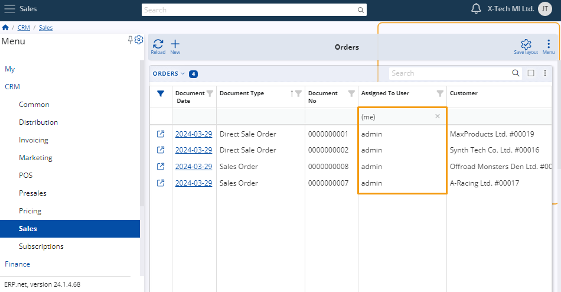
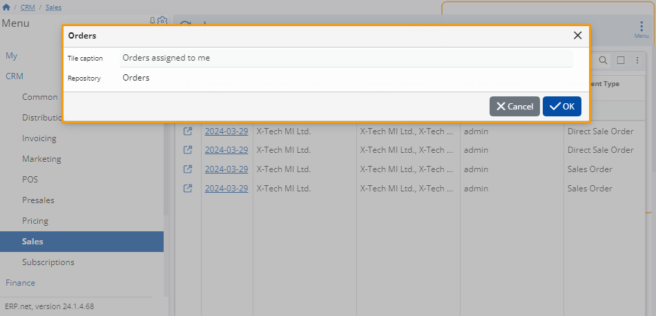

How to use expressions to filter my items
Filtering expressions can help you locate yourself or your current role within a specific navigator. You can also search by your company or branch office.
Filtering expressions can be found in the filter row beneath the columns containing users or companies within the respective navigator.
Additionally, they are available in the Advanced filter panel, utilising the contains operator.
If the filtering row is not visible, you can enable it through the panel's menu or by clicking on the filter icon on the far left of the columns.
Example:
Within the Orders panel of the Sales module, you input "(me)" in the filtering row of the Assigned to User column.
As a result, only your user profile will be displayed in the table, filtering out all other users.

Rules and syntax
Filtering expressions follow a fixed syntax that can influence the outcome they produce.
It's therefore crucial to write them down exactly as they are if you want to achieve the desired effect.
Filter by your company, branch office, or role
This functionality enables you to conveniently locate items associated with your company or role in the navigator.
You can employ the filtering expressions "(current)" and "(empty)" to achieve this.
When using "(current)", the table will display either your company or your current role, depending on the column where you enter the expression. On the other hand, "(empty)" will reveal cells with no values.
Example:
Within the Orders panel of the Sales module, input "(current)" into the filtering row of the Enterprise Company column.
Consequently, only the company you're presently involved within your user profile will be displayed in the table, filtering out all others.
_29_03.png)
You can also combine them to find a particular item, by assigning more than one filtering expression at a time. To do that assign them with different columns or combine them in one with “or”.
Example:
In the Orders panel of the Sales module, you aim to locate all orders belonging to your company and assigned to you.
You want to ensure that each order has a location assigned. To accomplish this, input "(current)" in the Enterprise Company column to filter items linked to your company.
In the Assigned to User column, input "(me)" to narrow down orders assigned specifically to you.
For the Enterprise Company Location, input "(current) or (empty)" to display both items with a location and those without.
This ensures comprehensive visibility of orders while verifying that each order has an assigned Enterprise Company location.
Note
When you input expressions in the filtering row, popup suggestions will appear beneath the cell.

Make a tile using a filtering expression
Once you've set a filtering expression, you can generate a tile via the page menu. Upon tile creation, the expression becomes permanently linked to it.
Example:
Filter the table to show only items assigned to you, then, open the page menu and click on the Create a new tile.
Once you’ve done that a window will open where you can give that tile a name. In this case, it will be “Orders assigned to me”.

When you are ready click OK and the tile will be ready.